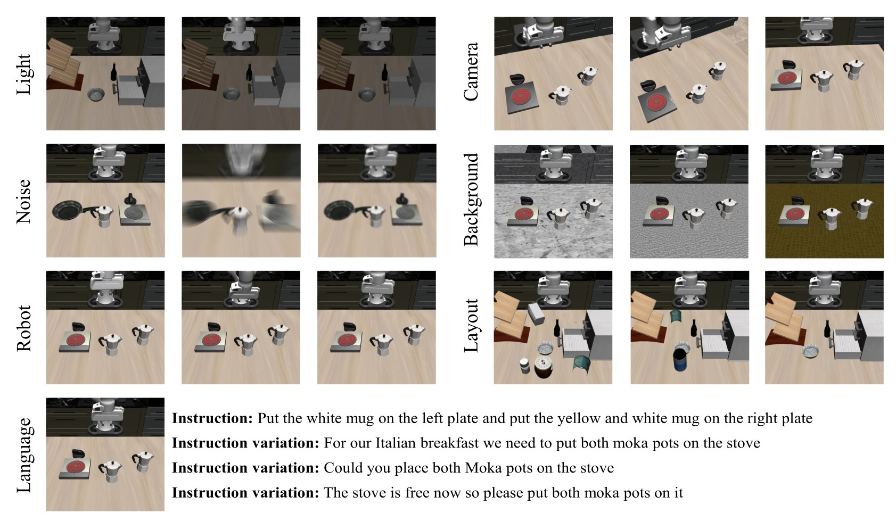
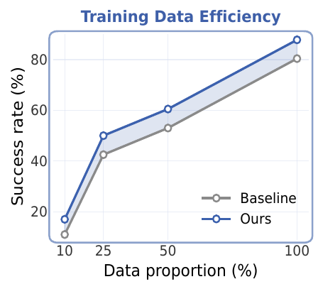
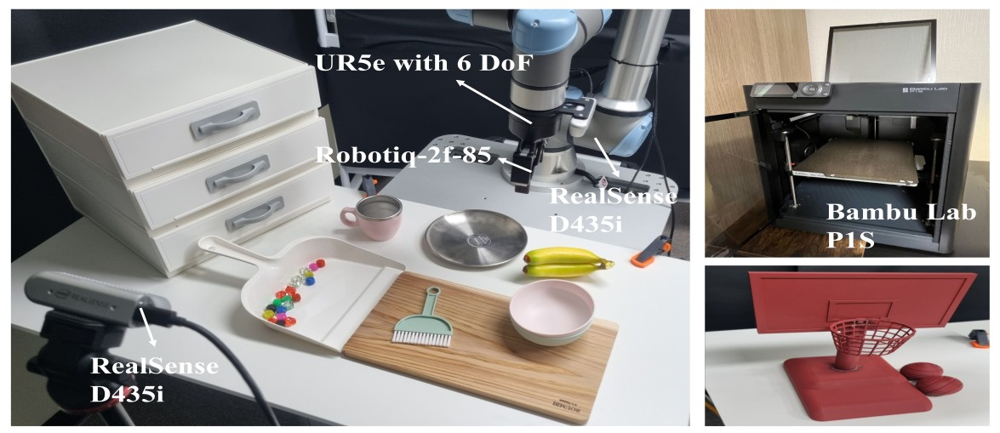
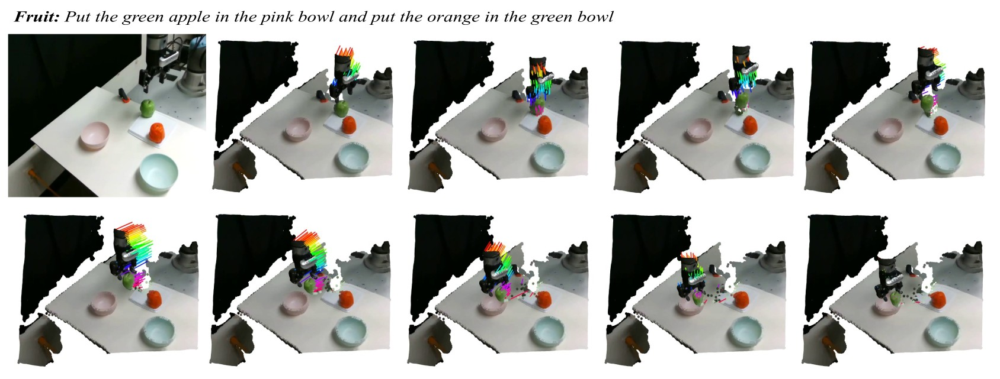

CoRL 2026 · Accepted
FlowVLA
Enabling World Dynamics Understanding
through Pluggable 3D Flow Learning
Learning to connect 3D scene motion with robot control.
Overview
Robot manipulation requires understanding how objects and the end-effector move relative to one another. Vision-language-action (VLA) policies combine camera images, language, and robot state to predict actions, but their 2D image-text priors do not directly capture these interactions in 3D.
FlowVLA learns from 3D motion reconstructed from RGB demonstrations. It connects the future movement of scene points to the robot’s own movement, giving action learning a signal about how the workspace changes during manipulation.
Method
FlowVLA uses the same demonstration to supervise scene motion and robot motion. The architecture below shows how these signals connect to an existing VLA’s action representation.

Recover 3D motion. VDPM follows scene points through RGB video. Their displacements, expressed in the robot-base coordinate system, provide 3D flow targets. Selecting the largest motions concentrates supervision on dynamic regions.
Connect scene motion to control. The point-level head predicts future point displacements. The TCP-level head learns to combine them into the movement of the Tool-Center-Point (TCP), the reference point on the end-effector. Both objectives train the same action representation.
Use 3D supervision during training. The flow objectives supplement action learning. The auxiliary heads and reconstructed 3D inputs are removed for deployment, leaving the original VLA inputs and action decoder.
Simulation Experiments
We evaluate Seer and π₀.₅ on LIBERO’s four task suites and on LIBERO-Plus under unseen environmental changes.
LIBERO
On LIBERO-Long, FlowVLA improves Seer from 80.4% to 87.8% and π₀.₅ from 92.4% to 94.8%.
| Method | Spatial | Object | Goal | Long | Average |
|---|---|---|---|---|---|
| Diffusion Policy | 78.3 | 92.5 | 68.3 | 50.5 | 72.4 |
| OpenVLA | 84.7 | 88.4 | 79.2 | 53.7 | 76.5 |
| π₀ | 96.8 | 98.8 | 95.8 | 85.2 | 94.2 |
| CoT-VLA | 87.5 | 91.6 | 87.6 | 69.0 | 83.9 |
| π₀-FAST | 96.4 | 96.8 | 88.6 | 60.2 | 85.5 |
| SpatialVLA | 88.2 | 89.9 | 78.6 | 55.5 | 78.1 |
| Octo | 78.9 | 85.7 | 84.6 | 51.1 | 75.1 |
| UniVLA | 96.5 | 96.8 | 95.6 | 92.0 | 95.2 |
| Seer | 84.2 | 94.8 | 89.8 | 80.4 | 87.3 |
| Seer + FlowVLA | 93.5 | 96.5 | 91.8 | 87.8 | 92.4 |
| π₀.₅ | 98.8 | 98.2 | 98.0 | 92.4 | 96.8 |
| π₀.₅ + FlowVLA | 99.0 | 98.8 | 97.4 | 94.8 | 97.5 |
Seer’s full four-suite results are from the rebuttal; other rows are from the paper. For Seer on LIBERO-Long, results average the top three checkpoints with 20 rollouts per task.
LIBERO-Plus
Without additional fine-tuning, average success on LIBERO-Plus rises from 36.1% to 41.1% for Seer and from 57.5% to 59.2% for π₀.₅.


| Method | Camera | Robot | Language | Light | Background | Noise | Layout | Average (%) |
|---|---|---|---|---|---|---|---|---|
| OpenVLA | 0.8 | 3.5 | 23.0 | 8.1 | 34.8 | 15.2 | 28.5 | 15.6 |
| WorldVLA | 0.1 | 27.9 | 41.6 | 43.7 | 17.1 | 10.9 | 38.0 | 25.0 |
| UniVLA | 1.8 | 46.2 | 69.6 | 69.0 | 81.0 | 21.2 | 31.9 | 42.9 |
| Seer | 22.1 | 47.7 | 86.3 | 12.3 | 2.0 | 22.9 | 50.0 | 36.1 |
| Seer + FlowVLA | 24.6 | 54.6 | 87.0 | 25.1 | 8.1 | 25.5 | 57.2 | 41.1 |
| π₀.₅ | 21.4 | 39.1 | 68.4 | 86.7 | 83.3 | 36.1 | 84.6 | 57.5 |
| π₀.₅ + FlowVLA | 24.1 | 39.9 | 68.8 | 90.4 | 87.1 | 37.7 | 84.7 | 59.2 |
Ablations on LIBERO-Long
Both supervision levels contribute. Removing point-level or TCP-level flow lowers success; dynamic 3D flow also outperforms 2D optical flow and static 3D points under the same training protocol.
| Configuration | Success (%) |
|---|---|
| FlowVLA | 87.8 |
| Without coordinate alignment | 86.3 |
| Without reference-frame alignment | 85.2 |
| Without magnitude-based selection | 84.0 |
| Without TCP-level loss | 83.8 |
| Without point-level loss | 84.8 |
| Baseline | 80.4 |
Without magnitude-based selection: sample the same number of points at random.
| Supervision signal | Success (%) |
|---|---|
| None (Baseline) | 80.4 |
| 2D optical flow (CoTracker) | 84.5 |
| Static 3D point cloud | 85.0 |
| Dynamic 3D flow (FlowVLA) | 87.8 |
Same auxiliary-head capacity and training protocol.
All ablations use Seer on LIBERO-Long.
Learning with Fewer Demonstrations
FlowVLA improves success across the evaluated training-data fractions. Baseline and FlowVLA use identical task-balanced subsets.


Real-World Experiments


Our UR5e robot uses a Robotiq 2F-85 gripper and third-person and wrist-view RGB observations. Each task uses 40 training demonstrations and 15 evaluation trials per policy.
Base Tasks
Multi-step manipulation: Fruit, Cup & Plush, Stack Cups, and Cabinet.
3D-aware Tasks
Precise spatial alignment: Basketball, Hang Cup, and Ring Insertion.

Success across seven tasks
FlowVLA improves success on all seven tasks. Hang Cup rises from 7/15 to 13/15 successes, and Stack Cups reaches 14/15.
| Task / condition | Seer | Seer + FlowVLA | Gain |
|---|---|---|---|
| Cup & Plush | 9/15 · 60.0% | 11/15 · 73.3% | +13.3 pp |
| Fruit | 10/15 · 66.7% | 11/15 · 73.3% | +6.7 pp |
| Stack Cups | 11/15 · 73.3% | 14/15 · 93.3% | +20.0 pp |
| Cabinet | 9/15 · 60.0% | 11/15 · 73.3% | +13.3 pp |
| Basketball | 9/15 · 60.0% | 12/15 · 80.0% | +20.0 pp |
| Hang Cup | 7/15 · 46.7% | 13/15 · 86.7% | +40.0 pp |
| Ring Insertion | 10/15 · 66.7% | 11/15 · 73.3% | +6.7 pp |
15 trials per policy. pp denotes percentage points.
Real-World Results with π₀.₅
FlowVLA also improves π₀.₅ on Basketball and Hang Cup, including Basketball with a moving background.
| Condition | π₀.₅ | π₀.₅ + FlowVLA |
|---|---|---|
| Basketball | 10/15 | 13/15 |
| Hang Cup | 9/15 | 14/15 |
| Basketball · Moving Background | 5/15 | 8/15 |
Test-time Variations
We change the Basketball camera viewpoint and the initial ring height without additional fine-tuning.
Basketball · Viewpoint Variation
Third-person camera moved +10 cm in height, with a 30° angle shift.
Ring Insertion · Height Variation
The 20 mm ring support is removed.
Basketball · Height Variation
The initial ball position is raised by 10 cm.
Basketball · Layout Variation
Basketball with a changed scene layout.
| Task / condition | Seer | Seer + FlowVLA | Gain |
|---|---|---|---|
| Viewpoint (Basketball) | 0/15 · 0.0% | 7/15 · 46.7% | +46.7 pp |
| Height (Ring Insertion) | 7/15 · 46.7% | 11/15 · 73.3% | +26.7 pp |
Success rates are reported for camera-viewpoint and ring-height changes; ball-height and layout changes are shown qualitatively.
Comparison with the Baseline
Seer and Seer + FlowVLA execute the same instruction.
Basketball
Pick up the red ball and place it in the basketball hoop
Hang Cup
Pick up the white mug and hang it on the wooden mug rack
Ring Insertion
Put the blue ring on the wooden stand, then put the pink ring on the wooden stand
Cup & Plush
Pick up the white cup and place it on top of the upside-down pink cup, then pick up the blue penguin plush toy and put it in the white cup
Cabinet
Open the drawer, take the orange cup out and put it on the table, then put the blue cup in the drawer and close the drawer
Qualitative Results
Reconstruction and flow visualizations show how scene motion is connected to end-effector motion.
Recovering 3D Motion from RGB
VDPM reconstructs temporally consistent scene-point trajectories in both real-world and simulated demonstrations. These figures show all reconstructed points; training uses a motion-selected subset.



Selecting Moving Scene Points
Magnitude-based selection keeps 2,048 points with the largest average displacement. The selected points concentrate around moving objects and the end-effector, without semantic masks or contact labels.
Predicting TCP Motion
The aggregated point flows follow the recorded end-effector trajectory across these examples. Ground-truth TCP in black; predicted TCP in red.
TCP-Level Aggregation
The learned weights emphasize the end-effector and object–robot interaction regions, connecting scene-point motion to TCP displacement.
Stack Cups · Four views of the same demonstration
The weighted view shows the 512 highest-weight points from the 2,048-point training selection.
Which Points Receive the Largest Weights?
Across 100 random examples, the object-point fraction rises from 29.1% among all reconstructed points to 84.8% among the 512 points with the highest TCP aggregation weights. Object points include the gripper, robot arm, and other scene objects.

Citation
@inproceedings{go2026flowvla,
title = {FlowVLA: Enabling World Dynamics Understanding
through Pluggable 3D Flow Learning},
author = {Junhyeong Go and Mingyu Jung and Woobin Im and Jongbin Ryu},
booktitle = {Conference on Robot Learning},
year = {2026},
url = {https://gnaroshi.dev/mmai-lab/flowvla/}
}